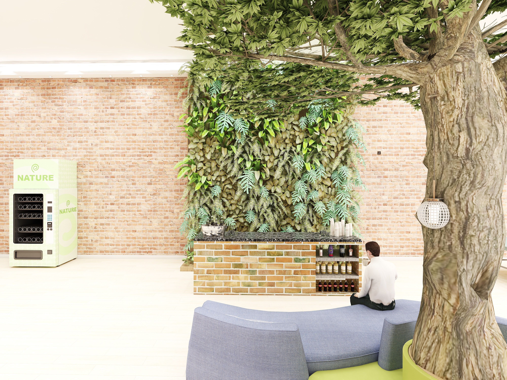
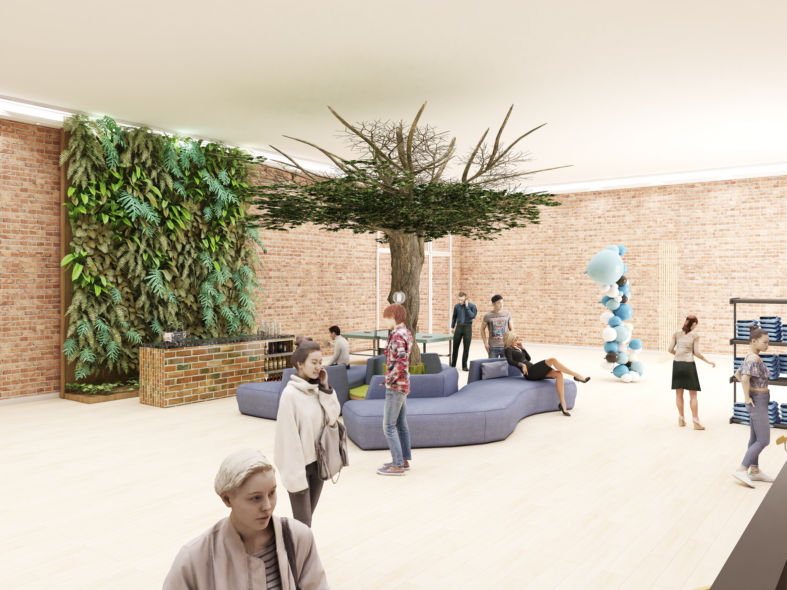
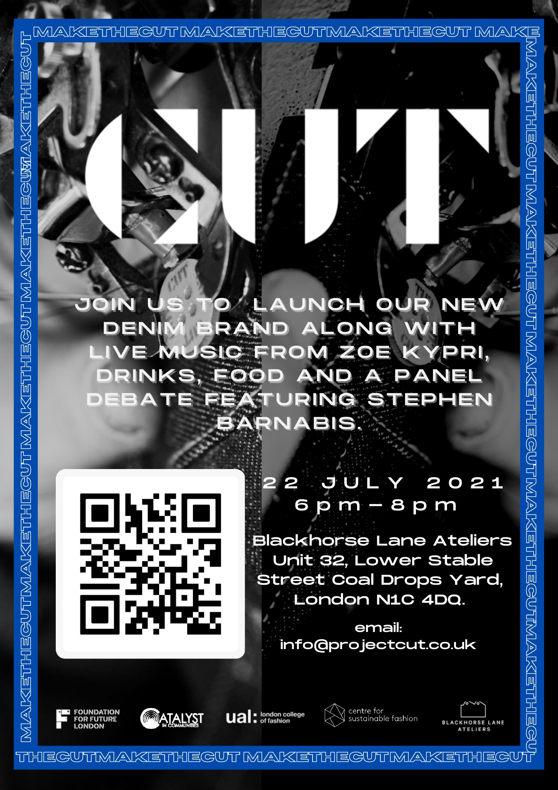

CUT is a purpose-driven sustainable denim brand built around a single mission: using fashion to raise awareness about knife crime in the UK. Developed at UAL London College of Fashion, CUT partnered with Blackhorse Lane Ateliers, East London's most celebrated denim manufacturer, to produce knife-safe denim as both a product and a statement.
The brand's tagline, "WEAR YOUR MORALS.", positions CUT at the intersection of fashion, community and activism, a brand that believes what you wear communicates what you stand for. The campaign targeted a nationwide UK audience, acknowledging that knife crime is not exclusively a London issue but one that resonates across cities and communities.
I led the brand report, press strategy, event production, influencer strategy, social media campaign, and website design for the CUT launch, delivered in partnership with the Foundation for Future London, Catalyst in Communities, Centre for Sustainable Fashion, and UAL London College of Fashion. Online engagement increased 20% through the launch campaign.
Maker
Blackhorse Lane Ateliers
East London's master denim manufacturer, producing knife-safe denim, the material foundation and ethical backbone of the brand.
Product
Knife Safe
The product proposition: denim engineered to be protective. Fashion as armour, literally and symbolically.
Ethos
LWFBW
Living Without Fear Before the World, the brand's emotional core. A statement of intent for young people navigating life in the UK.
Community
Through Unity
The community belief: that collective action and shared values are the foundation for change. CUT is a brand built for and by its community.



Partners
Foundation for Future London
Catalyst in Communities
UAL London College of Fashion
Centre for Sustainable Fashion
Blackhorse Lane Ateliers